Explore Thessaloniki
A Brief History
Thessaloniki was founded in 315 BCE and became a major Byzantine second capital after Constantinople. Roman forums, Ottoman markets, and waterfront warehouses record Macedonian, Balkan, and Mediterranean trade. A devastating fire in 1917 reshaped the centre before 20th-century reconstruction and the 1997 European Capital of Culture programme. Municipal archives, parish records, and surviving architecture help explain how the city connected to wider regional trade routes, court patronage, and modern civic rebuilding after industrial and wartime change.
Attractions Map
Top Sights & Activities
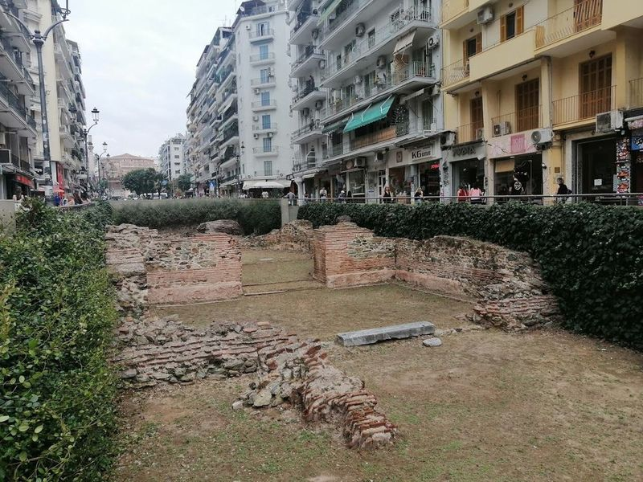
Arch of Galerius
The Arch of Galerius, also known as "Kamara," is a significant Roman monument in Thessaloniki. Built in 303 CE, it commemorates Emperor Galerius' triumph over the Persians and features intricate marble reliefs depicting various scenes and individuals. This structure is a popular gathering spot for both locals and tourists, offering a glimpse into the city's ancient past.
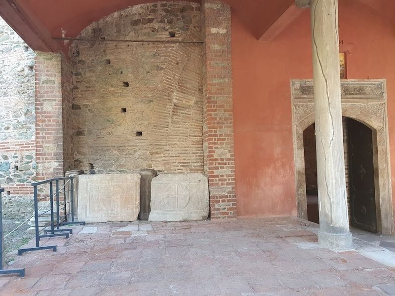
Rotonda
Rotunda is a circular building with a rich history dating back to the early 300s. Initially believed to be part of the palace of Roman Emperor Galerius, recent studies suggest it was actually built by Constantine the Great as his third mausoleum. The building's mosaics, once thought to depict saints and martyrs, are now understood to showcase the emperor and his courtiers alongside Christian symbols.
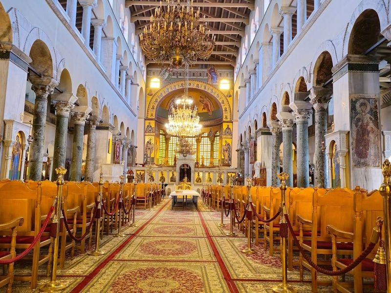
Holy Church of Saint Demetrius
The Holy Church of Saint Demetrius, Patron Saint of Thessalonica, is a significant ancient Christian church with a rich history. Built on the site of an ancient Roman bath house, it houses the body of Saint Demetrius, a Roman soldier martyred in AD 306. The church features an underground crypt where the martyrdom took place and relics of Saint Demetrius in a silver reliquary.
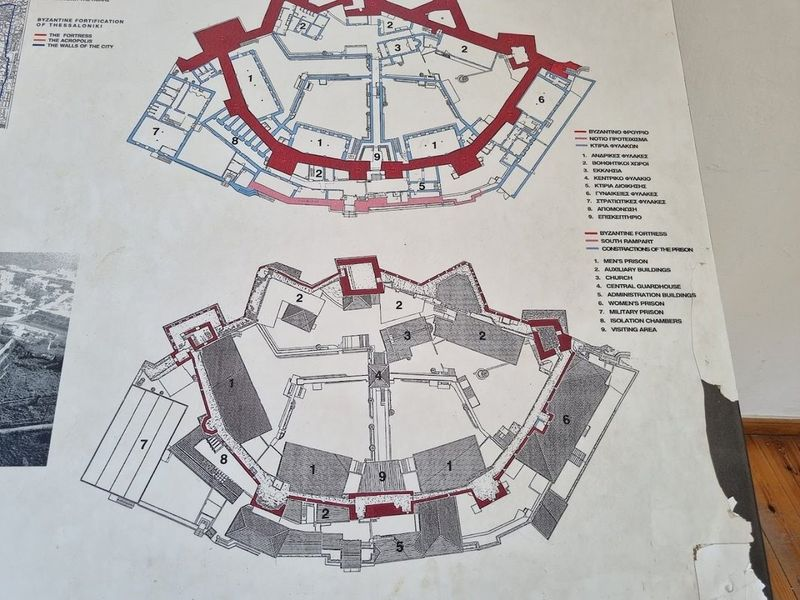
Heptapyrgion of Thessaloniki
The Heptapyrgion of Thessaloniki, also known as the Seven Towers, is a Byzantine-era fortress located on the northern slopes of the city. It forms part of the Acropolis of Thessaloniki and offers panoramic views of the city, sea, and surrounding landscapes. This well-preserved fortress with multiple towers is a popular spot for visitors seeking Instagram-worthy shots, especially during sunrise and sunset when the pink sky creates a backdrop.
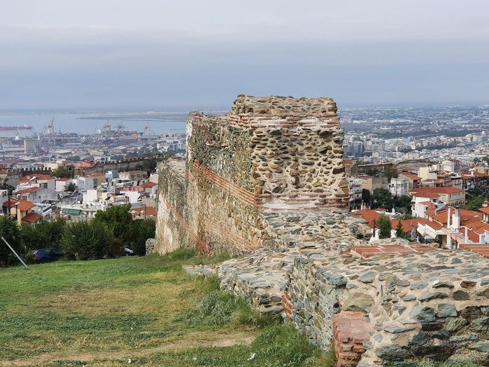
Thessaloniki Acropolis
The Acropolis of Thessaloniki is a must-visit for history enthusiasts exploring this vibrant city. Perched at the highest point, it offers views and a glimpse into the past, having been established by King Cassander. This historic site, also known as Ano Poli or Upper City, features ancient walls and significant landmarks like the Church of Osios David and Eptapyrgio Castle.
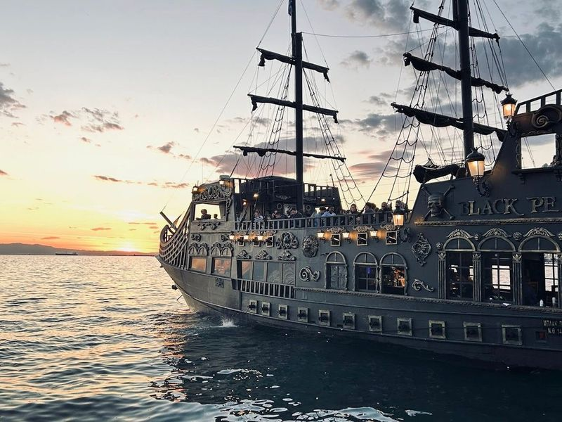
The Umbrellas by Zongolopoulos
The Umbrellas Sculpture by Zogolopoulos is a renowned landmark located on the waterfront of Thessaloniki. This installation features umbrellas mounted on tall steel poles, creating a striking visual against the backdrop of the sea. Visitors often gather at this popular meeting point to witness sunsets and capture photos.
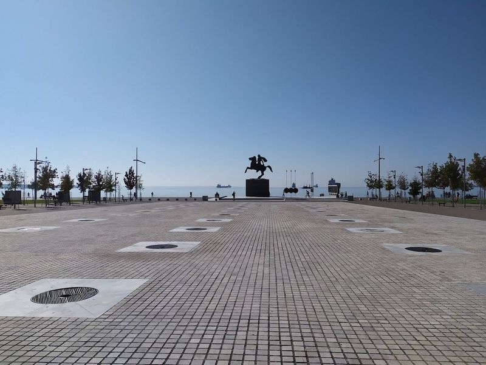
Alexander the Great Statue
The Alexander the Great Statue in Thessaloniki is a grand monument inaugurated in 1974, representing the strong bond between the city and the legendary Greek figure. The statue portrays Alexander on his loyal horse, Bucephalas, standing at an impressive 11 meters tall. Located at Nea Paralia, it offers views of Thessaloniki's famous landmarks like The White Tower and the Umbrellas sculpture by George Zongolopoulos.
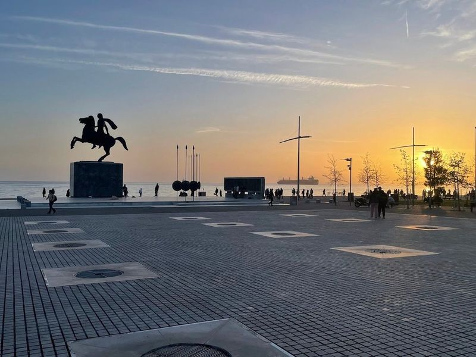
Alexander the Great Garden
The Alexander the Great Garden, located in Thessaloniki, Greece, is a serene oasis that pays tribute to the legendary historical figure. This attraction offers a tranquil environment where visitors can admire beautiful monuments and relax on benches while enjoying picturesque views of the Greek sea. The garden is a for tourists seeking to immerse themselves in Thessaloniki's rich history and natural beauty.
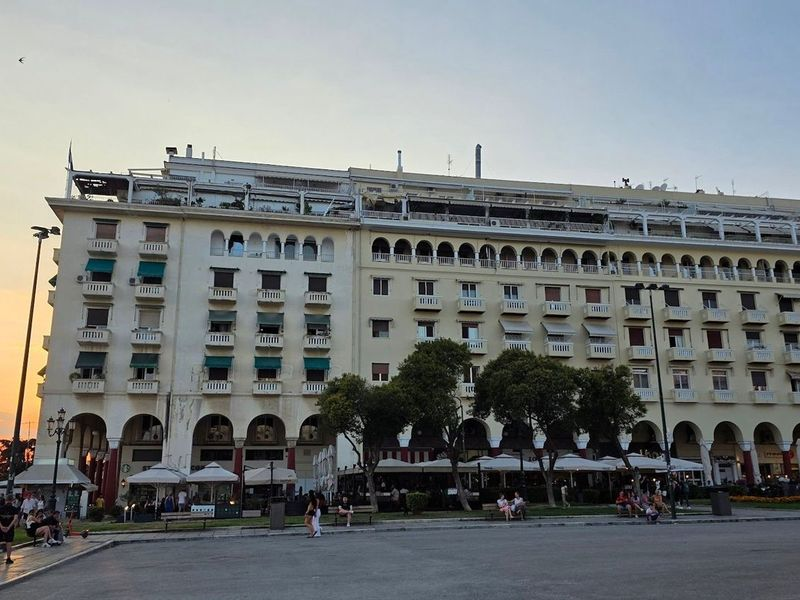
Aristotelous Square
Aristotelous Square is a vast, waterfront public square in Thessaloniki, designed by Ernest Hebrard and surrounded by mansions and cafes. The square offers a cosmopolitan atmosphere with a blend of Byzantine and Western architecture, reflecting the city's heritage. It is lined with architecturally diverse buildings that follow Hebrard's original city plan.
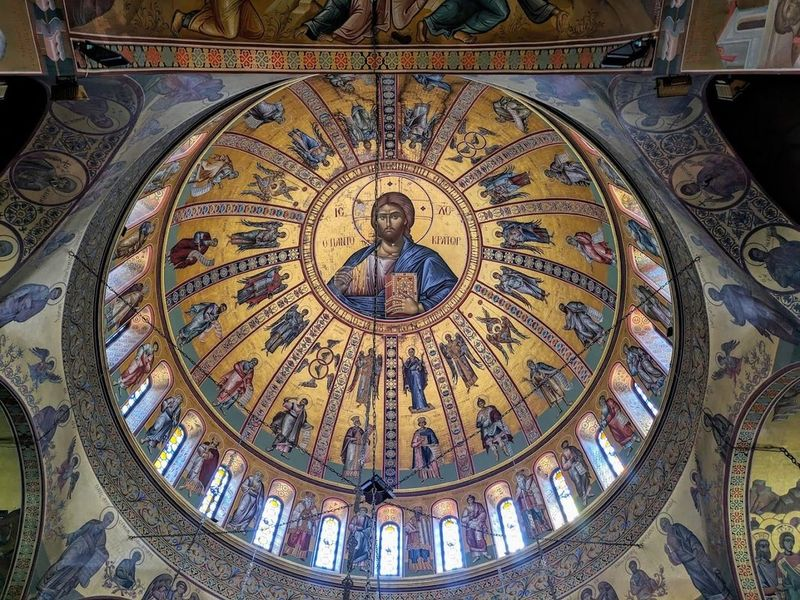
Holy Metropolitan Church of Saint Gregory Palamas
Saint Gregory Palamas Holy Metropolitan Church, located in Agias Sofias square in Thessaloniki, is a Byzantine-style church dedicated to Saint Gregory Palamas, an important figure in the Orthodox Church. The church features a red round dome and is adorned with lovely icons and wall paintings. It holds the relics of Saint Gregory Palamas and celebrates his feast day on November 14th as well as on the second Sunday of Lent.
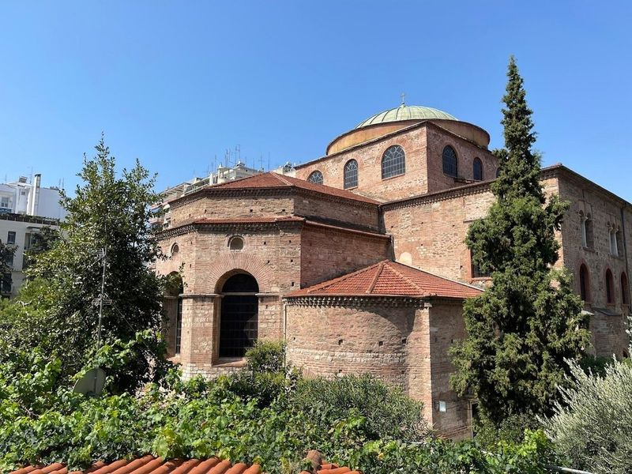
Holy Cathedral Church of Hagia Sophia
The Holy Church of Hagia Sophia, also known as the Temple of the Wisdom of God, is a historic and orthodox church located in Thessaloniki. It is renowned for its elaborate statuary, paintings, and mosaics under massive arches. The site forms part of Holy Cathedral Church of Hagia Sophia's documented civic and cultural landscape within Thessaloniki, with archives and visitor information available from municipal or regional heritage authorities.
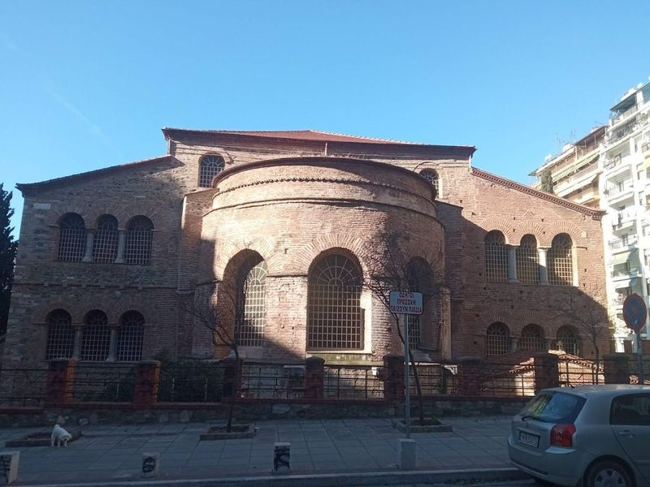
Church of the Acheiropoietos
The Holy Church of the Virgin Mary Acheiropoietos, located in Thessaloniki, Greece, is a significant early Christian and Byzantine monument. Dating back to the 5th century AD, this large building has undergone modifications over the years to reflect a more Byzantine style. Inside, visitors can admire its plain yet treasured ornamentation and portable icons.
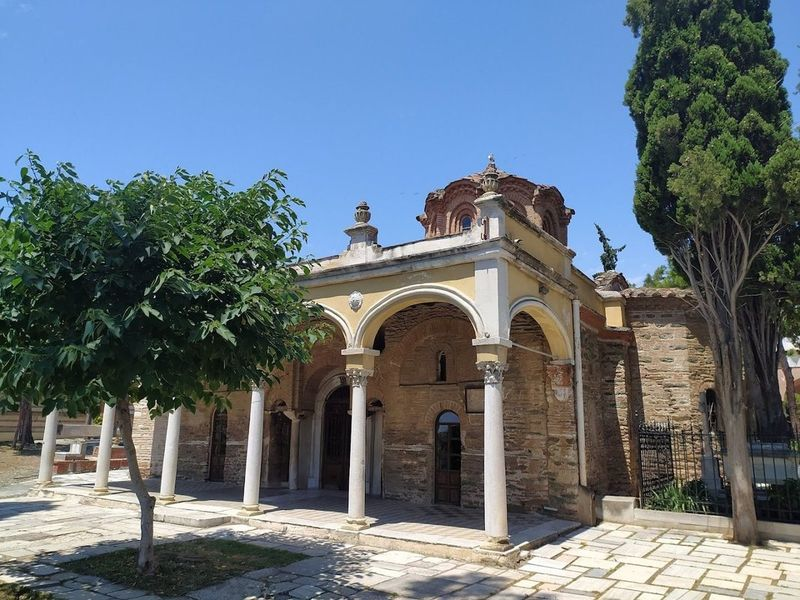
Vlatadon Monastery
Perched on a hill in the Ano Poli (Upper Town) of Thessaloniki, the Vlatadon Monastery offers views of the city and beyond to Mount Olympus. This Byzantine temple, often referred to as the 'Bride of Thermaikos,' is adorned with centuries-old frescoes, icons, and religious treasures.
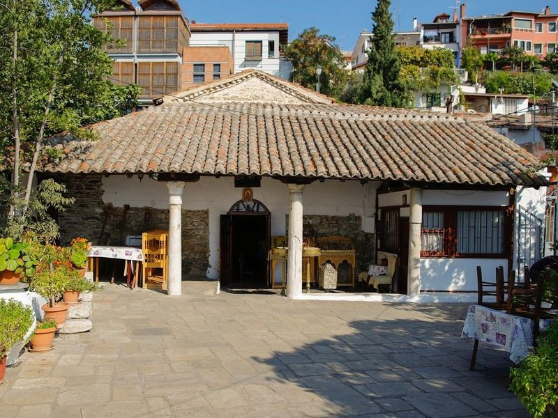
Latomos Monastery - Holy Church of Hosios David
Latomos Monastery - Holy Church of Hosios David is a centuries-old monastery church located in Thessaloniki, Greece. The church is renowned for its medieval frescoes and an early-Christian mosaic of Jesus in its apse. The site forms part of Latomos Monastery - Holy Church of Hosios David's documented civic and cultural landscape within Thessaloniki, with archives and visitor information available from municipal or regional heritage authorities.
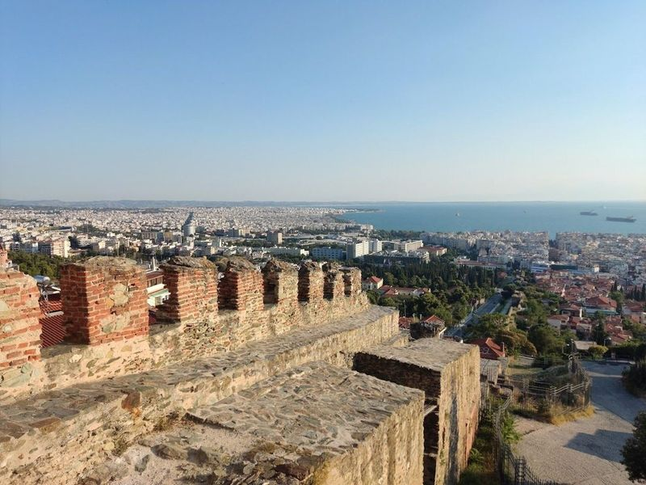
Trigonion Tower
Triangle Tower, part of the Ottoman fortifications surrounding the medieval city, offers a fascinating glimpse into Thessaloniki's rich history. Divided into sections, the interior of the tower is an intriguing exploration of historical narratives. Visitors can enjoy a magnificent view of the city from the top. The fortress wall and tower present an impressive and well-preserved structure from ancient times, providing panoramic views of Thessaloniki and its bay.
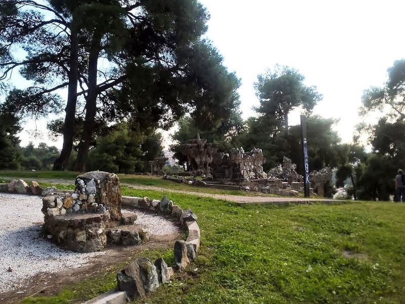
Pasha's Gardens
Pasha’s Gardens is a unique park in Thessaloniki with intriguing half-ruined stone structures from the early 20th century. It offers a peaceful escape with charming fountains and scenic views, making it a popular spot for leisurely strolls and relaxation. The park is adjacent to Sheikh Sou forest, providing additional paths for exploration. Visitors can also discover nearby attractions such as Trigonio Tower, The Portara Gate, and the Eptapirgion Fortress.
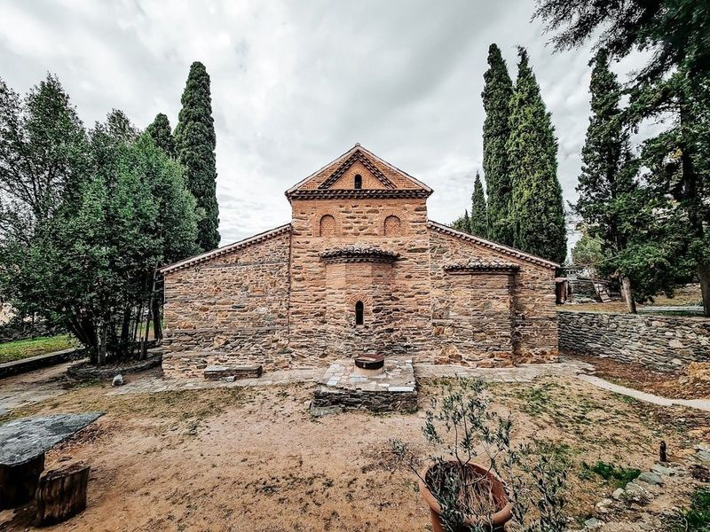
Holy Church of Saint Nicholas Orphanos
Nestled in the charming Upper Town of Thessaloniki, the Holy Church of Saint Nicholas Orphanos is a gem that showcases Byzantine architecture and artistry. This compact stone church, dating back to the early 14th century, is adorned with vibrant frescoes that beautifully illustrate scenes from Christ's life and various saints.
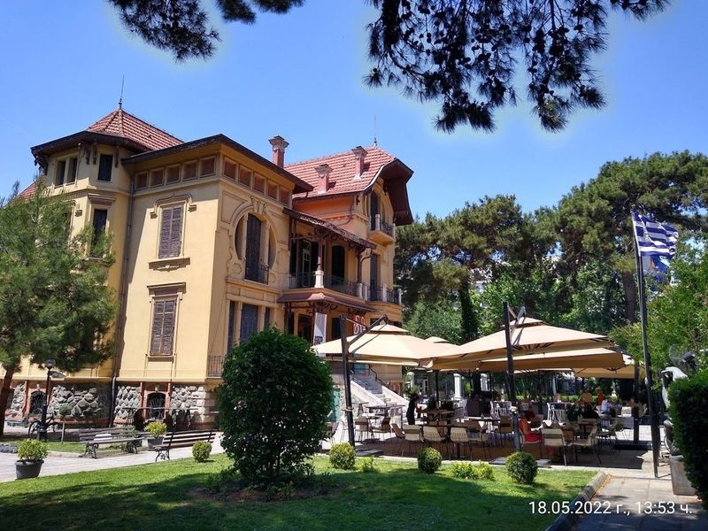
Casa Bianca
Nestled in the vibrant district of Epoches, Casa Bianca stands as a remarkable exhibition space for the Municipal Gallery of Thessaloniki. This early 20th-century architectural gem not only showcases contemporary artworks but also carries a rich history, including a poignant love story between a Jewish girl and a Greek man.
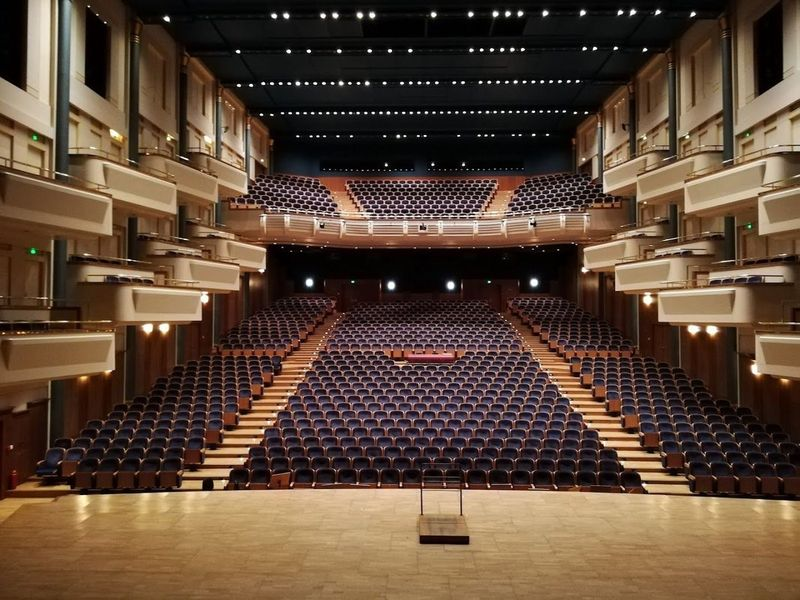
Thessaloniki Concert Hall
The Thessaloniki Concert Hall is a remarkable and expansive complex that offers music, theater, and conference facilities with sea views from its rooftop bar. Established in 2000, it has become an integral part of the city's cultural scene, hosting a variety of major events including ballet performances, symphonic concerts, plays, and operas.
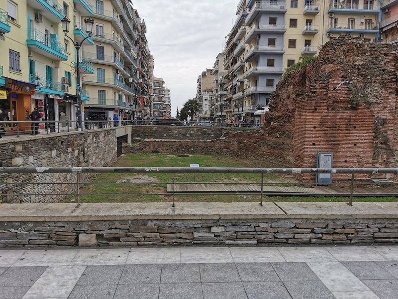
Navarino Square
Navarinou Square, also known as Plateia Navarinou, is a vibrant hub in Thessaloniki, popular among students due to its proximity to the university. The square is surrounded by hip coffee shops and unique tavernas, offering great opportunities for people-watching and sightseeing. It's a place where modern meets ancient, with the ruins of the Roman Palace of Galerius dominating one side and modern buildings, cafes, restaurants, and stores on the other.
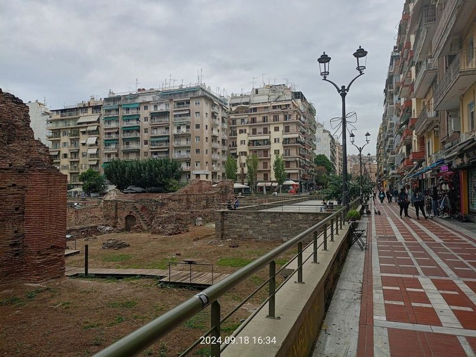
Palace of Galerius
The Palace of Galerius, located in Thessaloniki, is a significant monument that reflects the transition from the Roman to Byzantine era. Built in the late 3rd to early 4th century AD by Emperor Galerius, it served as the seat of the eastern part of the Roman Empire. The complex includes ruins such as massive walls, courtyards, corridors, and rooms with intricate mosaic floors.
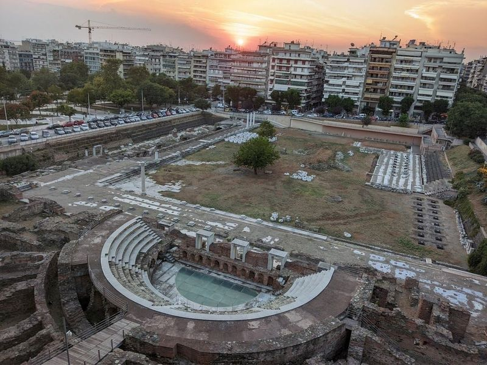
Ancient Agora Archeological Site
The Ancient Agora Square in Thessaloniki is a significant historical site that served as a bustling marketplace and the center of commercial, political, and social activities during the Hellenistic and Roman periods. Constructed in the 2nd century BC, it was where merchants, artisans, and citizens gathered to trade goods and engage in civic life. The agora was an essential part of ancient Greek cities, including Thessaloniki.
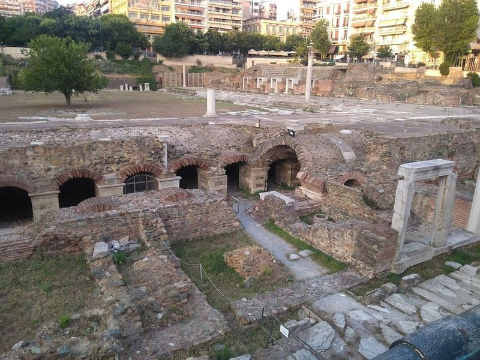
Roman Forum of Thessaloniki
Nestled in the vibrant heart of Thessaloniki, the Roman Forum, also referred to as the Ancient Agora, is a captivating archaeological site that transports visitors back to the 2nd century AD. Once a bustling hub for political and public life, this expansive complex spans approximately 100 meters wide and 150 meters long. It features impressive remnants such as restored amphitheaters and intricate corridors known as cryptoporticus—subterranean passageways likely used for storage.
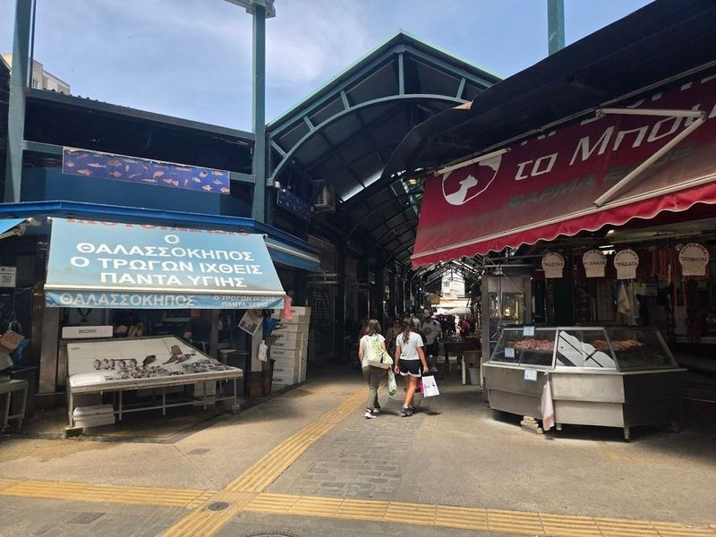
Kapani Market
Kapani Market is a bustling covered market in Thessaloniki, offering a wide array of goods including fruits, vegetables, meat, seafood, clothing and souvenirs. The market is steeped in history and culture, with its origins dating back to the Ottoman occupation. Visitors can immerse themselves in the vibrant atmosphere of Kapani Market by interacting with friendly vendors and selecting the freshest local produce.
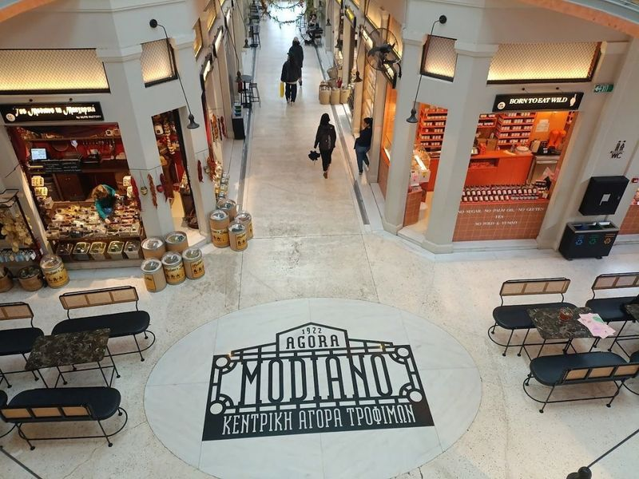
Agora Modiano
Immerse yourself in the vibrant local culture of Thessaloniki by visiting Agora Modiano, one of the city's most popular markets. Here explore a variety of food stalls offering traditional Greek delicacies such as Koulouri and Bougatsa. Indulge in the rich flavors of artisanal confectioneries and sample the famous ouzo, an anise-flavored aperitif.
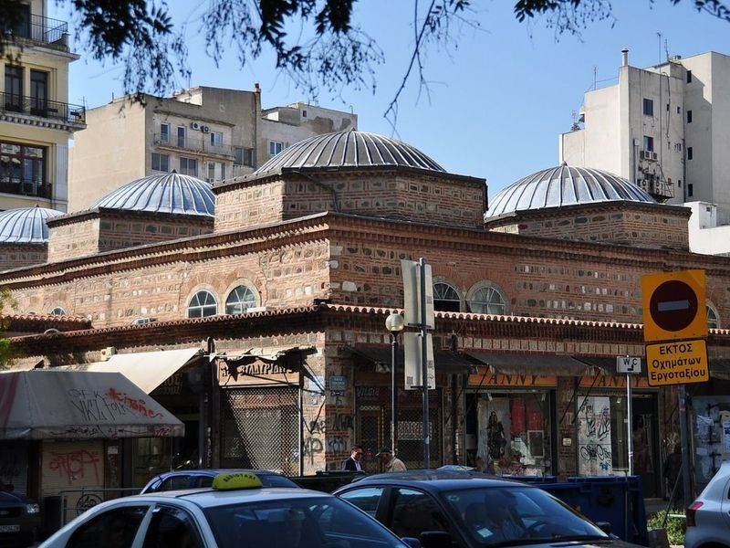
Bedesten of Thessaloniki
The Bedesten of Thessaloniki, a 15th-century Ottoman-style structure, is an architectural gem that showcases six magnificent domes. Originally serving as a marketplace for luxurious textiles like silk, its name derives from the Persian term "Bezzazistan," meaning clothing materials market. Today, this historic site has transformed into a vibrant hub filled with shops offering everything from clothing and jewelry to flowers.
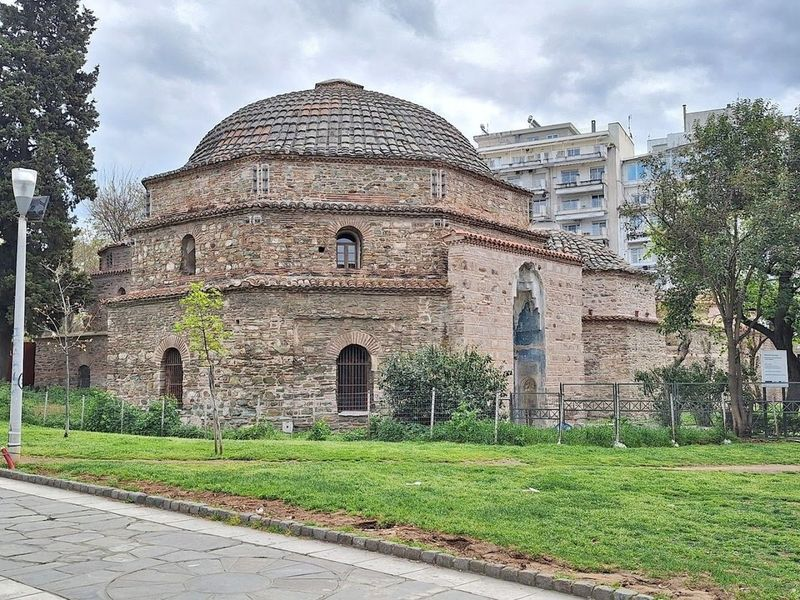
Bey Hamam (Paradise Baths)
Nestled in the heart of Thessaloniki, Bey Hamam, also known as the Baths of Paradise, is a captivating historical gem that dates back to 1444. Constructed by Sultan Murad II, this beautifully restored stone bathhouse showcases original marble seating and intricate domes that reflect its rich Ottoman heritage.
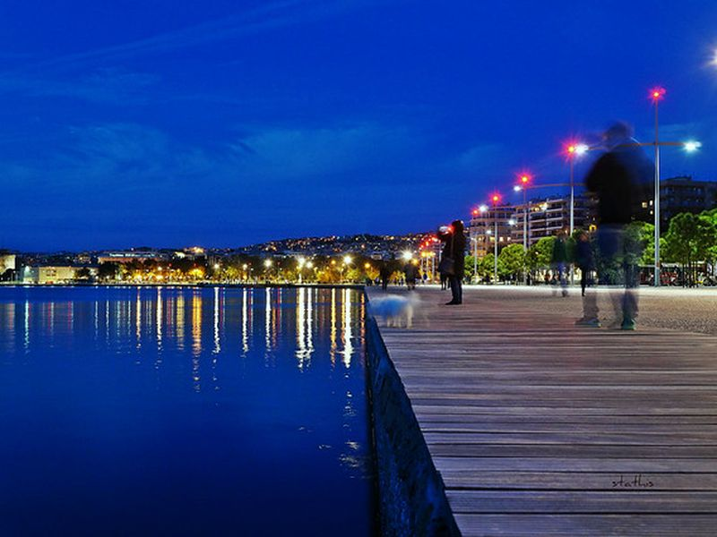
Thessaloniki Waterfront
A scenic promenade along the Thermaic Gulf, perfect for walking, cycling, and enjoying the sea views. The site forms part of Thessaloniki Waterfront's documented civic and cultural landscape within Thessaloniki, with archives and visitor information available from municipal or regional heritage authorities.